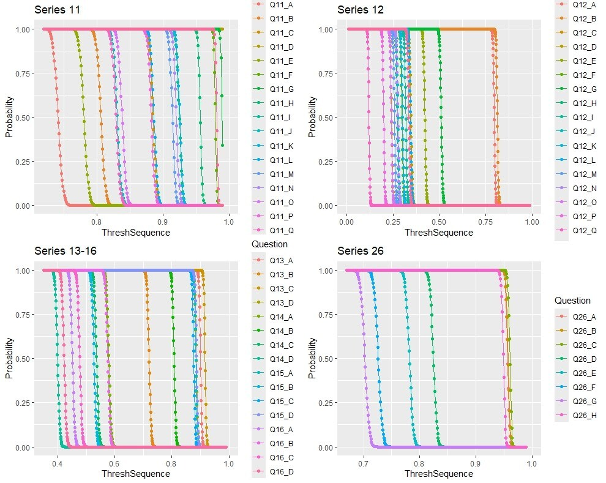
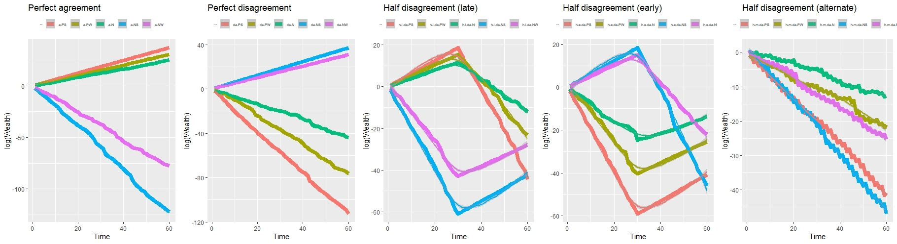

Publications
|  |
Marking Contemporary America's Attitudinal Stance Towards Modern Businesses: a Bayesian Attempt to Detect Deviation Patterns Based on Demographics and Politics Bahareh Zahirodini, Moinak Bhaduri Chance (American Statistical Association), Accepted Bayesian Analysis of America's Business Attitudes paper |
|  |
Are All Bets Off When It Comes to Agreement Gambles? Bahareh Zahirodini, Moinak Bhaduri Significance (RSS), Under review Analyzed decision-making under uncertainty using probabilistic models. paper |
|
Does Age Correlate with One's Ungauged Opinion on Modern Business Practices? Bahareh Zahirodini, Moinak Bhaduri Significance (RSS), Under review Applied Rasch model to uncover generational divides. paper |
|
|
Shape of Emotions from a Community-based Learning Experience:
Functional Alignment, Summaries, and Structural Breaks Bahareh Zahirodini, Moinak Bhaduri Chance (ASA), Under review Applied sentiment analysis and clustering to essays. paper |
Visualizations
|
The Stuff We Cannot Sweep Under a Torn Carpet:
Perfectly Imperfect Tessellations From Slices of Maslows' Triangle Bahareh Zahirodini, Moinak Bhaduri Nightingale, Data Visualization Society visualization |
|
|
Pyramids of Priorities and a Poisoned Omen:
Differing Hierarchies of Desired Business Ethics Bahareh Zahirodini, Moinak Bhaduri Nightingale, Data Visualization Society visualization |